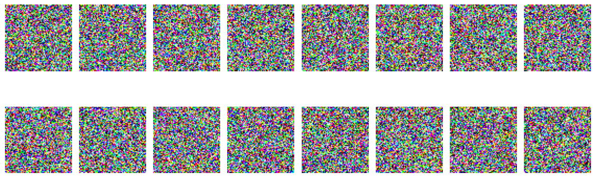
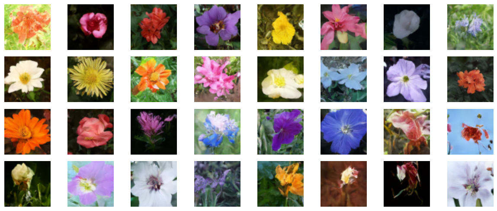

Denoising Diffusion Probabilistic Model
Author: A_K_Nain
Date created: 2022/11/30
Last modified: 2022/12/07
Description: Generating images of flowers with denoising diffusion probabilistic models.

Introduction
Generative modeling experienced tremendous growth in the last five years. Models like VAEs, GANs, and flow-based models proved to be a great success in generating high-quality content, especially images. Diffusion models are a new type of generative model that has proven to be better than previous approaches.
Diffusion models are inspired by non-equilibrium thermodynamics, and they learn to generate by denoising. Learning by denoising consists of two processes, each of which is a Markov Chain. These are:
-
The forward process: In the forward process, we slowly add random noise to the data in a series of time steps
(t1, t2, ..., tn ). Samples at the current time step are drawn from a Gaussian distribution where the mean of the distribution is conditioned on the sample at the previous time step, and the variance of the distribution follows a fixed schedule. At the end of the forward process, the samples end up with a pure noise distribution. -
The reverse process: During the reverse process, we try to undo the added noise at every time step. We start with the pure noise distribution (the last step of the forward process) and try to denoise the samples in the backward direction
(tn, tn-1, ..., t1).
We implement the Denoising Diffusion Probabilistic Models paper or DDPMs for short in this code example. It was the first paper demonstrating the use of diffusion models for generating high-quality images. The authors proved that a certain parameterization of diffusion models reveals an equivalence with denoising score matching over multiple noise levels during training and with annealed Langevin dynamics during sampling that generates the best quality results.
This paper replicates both the Markov chains (forward process and reverse process) involved in the diffusion process but for images. The forward process is fixed and gradually adds Gaussian noise to the images according to a fixed variance schedule denoted by beta in the paper. This is what the diffusion process looks like in case of images: (image -> noise::noise -> image)

The paper describes two algorithms, one for training the model, and the other for sampling from the trained model. Training is performed by optimizing the usual variational bound on negative log-likelihood. The objective function is further simplified, and the network is treated as a noise prediction network. Once optimized, we can sample from the network to generate new images from noise samples. Here is an overview of both algorithms as presented in the paper:

Note: DDPM is just one way of implementing a diffusion model. Also, the sampling algorithm in the DDPM replicates the complete Markov chain. Hence, it's slow in generating new samples compared to other generative models like GANs. Lots of research efforts have been made to address this issue. One such example is Denoising Diffusion Implicit Models, or DDIM for short, where the authors replaced the Markov chain with a non-Markovian process to sample faster. You can find the code example for DDIM here
Implementing a DDPM model is simple. We define a model that takes two inputs: Images and the randomly sampled time steps. At each training step, we perform the following operations to train our model:
- Sample random noise to be added to the inputs.
- Apply the forward process to diffuse the inputs with the sampled noise.
- Your model takes these noisy samples as inputs and outputs the noise prediction for each time step.
- Given true noise and predicted noise, we calculate the loss values
- We then calculate the gradients and update the model weights.
Given that our model knows how to denoise a noisy sample at a given time step, we can leverage this idea to generate new samples, starting from a pure noise distribution.
Setup
import math
import numpy as np
import matplotlib.pyplot as plt
# Requires TensorFlow >=2.11 for the GroupNormalization layer.
import tensorflow as tf
from tensorflow import keras
from tensorflow.keras import layers
import tensorflow_datasets as tfds
Hyperparameters
batch_size = 32
num_epochs = 1 # Just for the sake of demonstration
total_timesteps = 1000
norm_groups = 8 # Number of groups used in GroupNormalization layer
learning_rate = 2e-4
img_size = 64
img_channels = 3
clip_min = -1.0
clip_max = 1.0
first_conv_channels = 64
channel_multiplier = [1, 2, 4, 8]
widths = [first_conv_channels * mult for mult in channel_multiplier]
has_attention = [False, False, True, True]
num_res_blocks = 2 # Number of residual blocks
dataset_name = "oxford_flowers102"
splits = ["train"]
Dataset
We use the Oxford Flowers 102
dataset for generating images of flowers. In terms of preprocessing, we use center
cropping for resizing the images to the desired image size, and we rescale the pixel
values in the range [-1.0, 1.0]. This is in line with the range of the pixel values that
was applied by the authors of the DDPMs paper. For
augmenting training data, we randomly flip the images left/right.
# Load the dataset
(ds,) = tfds.load(dataset_name, split=splits, with_info=False, shuffle_files=True)
def augment(img):
"""Flips an image left/right randomly."""
return tf.image.random_flip_left_right(img)
def resize_and_rescale(img, size):
"""Resize the image to the desired size first and then
rescale the pixel values in the range [-1.0, 1.0].
Args:
img: Image tensor
size: Desired image size for resizing
Returns:
Resized and rescaled image tensor
"""
height = tf.shape(img)[0]
width = tf.shape(img)[1]
crop_size = tf.minimum(height, width)
img = tf.image.crop_to_bounding_box(
img,
(height - crop_size) // 2,
(width - crop_size) // 2,
crop_size,
crop_size,
)
# Resize
img = tf.cast(img, dtype=tf.float32)
img = tf.image.resize(img, size=size, antialias=True)
# Rescale the pixel values
img = img / 127.5 - 1.0
img = tf.clip_by_value(img, clip_min, clip_max)
return img
def train_preprocessing(x):
img = x["image"]
img = resize_and_rescale(img, size=(img_size, img_size))
img = augment(img)
return img
train_ds = (
ds.map(train_preprocessing, num_parallel_calls=tf.data.AUTOTUNE)
.batch(batch_size, drop_remainder=True)
.shuffle(batch_size * 2)
.prefetch(tf.data.AUTOTUNE)
)
Gaussian diffusion utilities
We define the forward process and the reverse process as a separate utility. Most of the code in this utility has been borrowed from the original implementation with some slight modifications.
class GaussianDiffusion:
"""Gaussian diffusion utility.
Args:
beta_start: Start value of the scheduled variance
beta_end: End value of the scheduled variance
timesteps: Number of time steps in the forward process
"""
def __init__(
self,
beta_start=1e-4,
beta_end=0.02,
timesteps=1000,
clip_min=-1.0,
clip_max=1.0,
):
self.beta_start = beta_start
self.beta_end = beta_end
self.timesteps = timesteps
self.clip_min = clip_min
self.clip_max = clip_max
# Define the linear variance schedule
self.betas = betas = np.linspace(
beta_start,
beta_end,
timesteps,
dtype=np.float64, # Using float64 for better precision
)
self.num_timesteps = int(timesteps)
alphas = 1.0 - betas
alphas_cumprod = np.cumprod(alphas, axis=0)
alphas_cumprod_prev = np.append(1.0, alphas_cumprod[:-1])
self.betas = tf.constant(betas, dtype=tf.float32)
self.alphas_cumprod = tf.constant(alphas_cumprod, dtype=tf.float32)
self.alphas_cumprod_prev = tf.constant(alphas_cumprod_prev, dtype=tf.float32)
# Calculations for diffusion q(x_t | x_{t-1}) and others
self.sqrt_alphas_cumprod = tf.constant(
np.sqrt(alphas_cumprod), dtype=tf.float32
)
self.sqrt_one_minus_alphas_cumprod = tf.constant(
np.sqrt(1.0 - alphas_cumprod), dtype=tf.float32
)
self.log_one_minus_alphas_cumprod = tf.constant(
np.log(1.0 - alphas_cumprod), dtype=tf.float32
)
self.sqrt_recip_alphas_cumprod = tf.constant(
np.sqrt(1.0 / alphas_cumprod), dtype=tf.float32
)
self.sqrt_recipm1_alphas_cumprod = tf.constant(
np.sqrt(1.0 / alphas_cumprod - 1), dtype=tf.float32
)
# Calculations for posterior q(x_{t-1} | x_t, x_0)
posterior_variance = (
betas * (1.0 - alphas_cumprod_prev) / (1.0 - alphas_cumprod)
)
self.posterior_variance = tf.constant(posterior_variance, dtype=tf.float32)
# Log calculation clipped because the posterior variance is 0 at the beginning
# of the diffusion chain
self.posterior_log_variance_clipped = tf.constant(
np.log(np.maximum(posterior_variance, 1e-20)), dtype=tf.float32
)
self.posterior_mean_coef1 = tf.constant(
betas * np.sqrt(alphas_cumprod_prev) / (1.0 - alphas_cumprod),
dtype=tf.float32,
)
self.posterior_mean_coef2 = tf.constant(
(1.0 - alphas_cumprod_prev) * np.sqrt(alphas) / (1.0 - alphas_cumprod),
dtype=tf.float32,
)
def _extract(self, a, t, x_shape):
"""Extract some coefficients at specified timesteps,
then reshape to [batch_size, 1, 1, 1, 1, ...] for broadcasting purposes.
Args:
a: Tensor to extract from
t: Timestep for which the coefficients are to be extracted
x_shape: Shape of the current batched samples
"""
batch_size = x_shape[0]
out = tf.gather(a, t)
return tf.reshape(out, [batch_size, 1, 1, 1])
def q_mean_variance(self, x_start, t):
"""Extracts the mean, and the variance at current timestep.
Args:
x_start: Initial sample (before the first diffusion step)
t: Current timestep
"""
x_start_shape = tf.shape(x_start)
mean = self._extract(self.sqrt_alphas_cumprod, t, x_start_shape) * x_start
variance = self._extract(1.0 - self.alphas_cumprod, t, x_start_shape)
log_variance = self._extract(
self.log_one_minus_alphas_cumprod, t, x_start_shape
)
return mean, variance, log_variance
def q_sample(self, x_start, t, noise):
"""Diffuse the data.
Args:
x_start: Initial sample (before the first diffusion step)
t: Current timestep
noise: Gaussian noise to be added at the current timestep
Returns:
Diffused samples at timestep `t`
"""
x_start_shape = tf.shape(x_start)
return (
self._extract(self.sqrt_alphas_cumprod, t, tf.shape(x_start)) * x_start
+ self._extract(self.sqrt_one_minus_alphas_cumprod, t, x_start_shape)
* noise
)
def predict_start_from_noise(self, x_t, t, noise):
x_t_shape = tf.shape(x_t)
return (
self._extract(self.sqrt_recip_alphas_cumprod, t, x_t_shape) * x_t
- self._extract(self.sqrt_recipm1_alphas_cumprod, t, x_t_shape) * noise
)
def q_posterior(self, x_start, x_t, t):
"""Compute the mean and variance of the diffusion
posterior q(x_{t-1} | x_t, x_0).
Args:
x_start: Stating point(sample) for the posterior computation
x_t: Sample at timestep `t`
t: Current timestep
Returns:
Posterior mean and variance at current timestep
"""
x_t_shape = tf.shape(x_t)
posterior_mean = (
self._extract(self.posterior_mean_coef1, t, x_t_shape) * x_start
+ self._extract(self.posterior_mean_coef2, t, x_t_shape) * x_t
)
posterior_variance = self._extract(self.posterior_variance, t, x_t_shape)
posterior_log_variance_clipped = self._extract(
self.posterior_log_variance_clipped, t, x_t_shape
)
return posterior_mean, posterior_variance, posterior_log_variance_clipped
def p_mean_variance(self, pred_noise, x, t, clip_denoised=True):
x_recon = self.predict_start_from_noise(x, t=t, noise=pred_noise)
if clip_denoised:
x_recon = tf.clip_by_value(x_recon, self.clip_min, self.clip_max)
model_mean, posterior_variance, posterior_log_variance = self.q_posterior(
x_start=x_recon, x_t=x, t=t
)
return model_mean, posterior_variance, posterior_log_variance
def p_sample(self, pred_noise, x, t, clip_denoised=True):
"""Sample from the diffusion model.
Args:
pred_noise: Noise predicted by the diffusion model
x: Samples at a given timestep for which the noise was predicted
t: Current timestep
clip_denoised (bool): Whether to clip the predicted noise
within the specified range or not.
"""
model_mean, _, model_log_variance = self.p_mean_variance(
pred_noise, x=x, t=t, clip_denoised=clip_denoised
)
noise = tf.random.normal(shape=x.shape, dtype=x.dtype)
# No noise when t == 0
nonzero_mask = tf.reshape(
1 - tf.cast(tf.equal(t, 0), tf.float32), [tf.shape(x)[0], 1, 1, 1]
)
return model_mean + nonzero_mask * tf.exp(0.5 * model_log_variance) * noise
Network architecture
U-Net, originally developed for semantic segmentation, is an architecture that is widely used for implementing diffusion models but with some slight modifications:
- The network accepts two inputs: Image and time step
- Self-attention between the convolution blocks once we reach a specific resolution (16x16 in the paper)
- Group Normalization instead of weight normalization
We implement most of the things as used in the original paper. We use the
swish activation function throughout the network. We use the variance scaling
kernel initializer.
The only difference here is the number of groups used for the
GroupNormalization layer. For the flowers dataset,
we found that a value of groups=8 produces better results
compared to the default value of groups=32. Dropout is optional and should be
used where chances of over fitting is high. In the paper, the authors used dropout
only when training on CIFAR10.
# Kernel initializer to use
def kernel_init(scale):
scale = max(scale, 1e-10)
return keras.initializers.VarianceScaling(
scale, mode="fan_avg", distribution="uniform"
)
class AttentionBlock(layers.Layer):
"""Applies self-attention.
Args:
units: Number of units in the dense layers
groups: Number of groups to be used for GroupNormalization layer
"""
def __init__(self, units, groups=8, **kwargs):
self.units = units
self.groups = groups
super().__init__(**kwargs)
self.norm = layers.GroupNormalization(groups=groups)
self.query = layers.Dense(units, kernel_initializer=kernel_init(1.0))
self.key = layers.Dense(units, kernel_initializer=kernel_init(1.0))
self.value = layers.Dense(units, kernel_initializer=kernel_init(1.0))
self.proj = layers.Dense(units, kernel_initializer=kernel_init(0.0))
def call(self, inputs):
batch_size = tf.shape(inputs)[0]
height = tf.shape(inputs)[1]
width = tf.shape(inputs)[2]
scale = tf.cast(self.units, tf.float32) ** (-0.5)
inputs = self.norm(inputs)
q = self.query(inputs)
k = self.key(inputs)
v = self.value(inputs)
attn_score = tf.einsum("bhwc, bHWc->bhwHW", q, k) * scale
attn_score = tf.reshape(attn_score, [batch_size, height, width, height * width])
attn_score = tf.nn.softmax(attn_score, -1)
attn_score = tf.reshape(attn_score, [batch_size, height, width, height, width])
proj = tf.einsum("bhwHW,bHWc->bhwc", attn_score, v)
proj = self.proj(proj)
return inputs + proj
class TimeEmbedding(layers.Layer):
def __init__(self, dim, **kwargs):
super().__init__(**kwargs)
self.dim = dim
self.half_dim = dim // 2
self.emb = math.log(10000) / (self.half_dim - 1)
self.emb = tf.exp(tf.range(self.half_dim, dtype=tf.float32) * -self.emb)
def call(self, inputs):
inputs = tf.cast(inputs, dtype=tf.float32)
emb = inputs[:, None] * self.emb[None, :]
emb = tf.concat([tf.sin(emb), tf.cos(emb)], axis=-1)
return emb
def ResidualBlock(width, groups=8, activation_fn=keras.activations.swish):
def apply(inputs):
x, t = inputs
input_width = x.shape[3]
if input_width == width:
residual = x
else:
residual = layers.Conv2D(
width, kernel_size=1, kernel_initializer=kernel_init(1.0)
)(x)
temb = activation_fn(t)
temb = layers.Dense(width, kernel_initializer=kernel_init(1.0))(temb)[
:, None, None, :
]
x = layers.GroupNormalization(groups=groups)(x)
x = activation_fn(x)
x = layers.Conv2D(
width, kernel_size=3, padding="same", kernel_initializer=kernel_init(1.0)
)(x)
x = layers.Add()([x, temb])
x = layers.GroupNormalization(groups=groups)(x)
x = activation_fn(x)
x = layers.Conv2D(
width, kernel_size=3, padding="same", kernel_initializer=kernel_init(0.0)
)(x)
x = layers.Add()([x, residual])
return x
return apply
def DownSample(width):
def apply(x):
x = layers.Conv2D(
width,
kernel_size=3,
strides=2,
padding="same",
kernel_initializer=kernel_init(1.0),
)(x)
return x
return apply
def UpSample(width, interpolation="nearest"):
def apply(x):
x = layers.UpSampling2D(size=2, interpolation=interpolation)(x)
x = layers.Conv2D(
width, kernel_size=3, padding="same", kernel_initializer=kernel_init(1.0)
)(x)
return x
return apply
def TimeMLP(units, activation_fn=keras.activations.swish):
def apply(inputs):
temb = layers.Dense(
units, activation=activation_fn, kernel_initializer=kernel_init(1.0)
)(inputs)
temb = layers.Dense(units, kernel_initializer=kernel_init(1.0))(temb)
return temb
return apply
def build_model(
img_size,
img_channels,
widths,
has_attention,
num_res_blocks=2,
norm_groups=8,
interpolation="nearest",
activation_fn=keras.activations.swish,
):
image_input = layers.Input(
shape=(img_size, img_size, img_channels), name="image_input"
)
time_input = keras.Input(shape=(), dtype=tf.int64, name="time_input")
x = layers.Conv2D(
first_conv_channels,
kernel_size=(3, 3),
padding="same",
kernel_initializer=kernel_init(1.0),
)(image_input)
temb = TimeEmbedding(dim=first_conv_channels * 4)(time_input)
temb = TimeMLP(units=first_conv_channels * 4, activation_fn=activation_fn)(temb)
skips = [x]
# DownBlock
for i in range(len(widths)):
for _ in range(num_res_blocks):
x = ResidualBlock(
widths[i], groups=norm_groups, activation_fn=activation_fn
)([x, temb])
if has_attention[i]:
x = AttentionBlock(widths[i], groups=norm_groups)(x)
skips.append(x)
if widths[i] != widths[-1]:
x = DownSample(widths[i])(x)
skips.append(x)
# MiddleBlock
x = ResidualBlock(widths[-1], groups=norm_groups, activation_fn=activation_fn)(
[x, temb]
)
x = AttentionBlock(widths[-1], groups=norm_groups)(x)
x = ResidualBlock(widths[-1], groups=norm_groups, activation_fn=activation_fn)(
[x, temb]
)
# UpBlock
for i in reversed(range(len(widths))):
for _ in range(num_res_blocks + 1):
x = layers.Concatenate(axis=-1)([x, skips.pop()])
x = ResidualBlock(
widths[i], groups=norm_groups, activation_fn=activation_fn
)([x, temb])
if has_attention[i]:
x = AttentionBlock(widths[i], groups=norm_groups)(x)
if i != 0:
x = UpSample(widths[i], interpolation=interpolation)(x)
# End block
x = layers.GroupNormalization(groups=norm_groups)(x)
x = activation_fn(x)
x = layers.Conv2D(3, (3, 3), padding="same", kernel_initializer=kernel_init(0.0))(x)
return keras.Model([image_input, time_input], x, name="unet")
Training
We follow the same setup for training the diffusion model as described
in the paper. We use Adam optimizer with a learning rate of 2e-4.
We use EMA on model parameters with a decay factor of 0.999. We
treat our model as noise prediction network i.e. at every training step, we
input a batch of images and corresponding time steps to our UNet,
and the network outputs the noise as predictions.
The only difference is that we aren't using the Kernel Inception Distance (KID) or Frechet Inception Distance (FID) for evaluating the quality of generated samples during training. This is because both these metrics are compute heavy and are skipped for the brevity of implementation.
**Note: ** We are using mean squared error as the loss function which is aligned with the paper, and theoretically makes sense. In practice, though, it is also common to use mean absolute error or Huber loss as the loss function.
class DiffusionModel(keras.Model):
def __init__(self, network, ema_network, timesteps, gdf_util, ema=0.999):
super().__init__()
self.network = network
self.ema_network = ema_network
self.timesteps = timesteps
self.gdf_util = gdf_util
self.ema = ema
def train_step(self, images):
# 1. Get the batch size
batch_size = tf.shape(images)[0]
# 2. Sample timesteps uniformly
t = tf.random.uniform(
minval=0, maxval=self.timesteps, shape=(batch_size,), dtype=tf.int64
)
with tf.GradientTape() as tape:
# 3. Sample random noise to be added to the images in the batch
noise = tf.random.normal(shape=tf.shape(images), dtype=images.dtype)
# 4. Diffuse the images with noise
images_t = self.gdf_util.q_sample(images, t, noise)
# 5. Pass the diffused images and time steps to the network
pred_noise = self.network([images_t, t], training=True)
# 6. Calculate the loss
loss = self.loss(noise, pred_noise)
# 7. Get the gradients
gradients = tape.gradient(loss, self.network.trainable_weights)
# 8. Update the weights of the network
self.optimizer.apply_gradients(zip(gradients, self.network.trainable_weights))
# 9. Updates the weight values for the network with EMA weights
for weight, ema_weight in zip(self.network.weights, self.ema_network.weights):
ema_weight.assign(self.ema * ema_weight + (1 - self.ema) * weight)
# 10. Return loss values
return {"loss": loss}
def generate_images(self, num_images=16):
# 1. Randomly sample noise (starting point for reverse process)
samples = tf.random.normal(
shape=(num_images, img_size, img_size, img_channels), dtype=tf.float32
)
# 2. Sample from the model iteratively
for t in reversed(range(0, self.timesteps)):
tt = tf.cast(tf.fill(num_images, t), dtype=tf.int64)
pred_noise = self.ema_network.predict(
[samples, tt], verbose=0, batch_size=num_images
)
samples = self.gdf_util.p_sample(
pred_noise, samples, tt, clip_denoised=True
)
# 3. Return generated samples
return samples
def plot_images(
self, epoch=None, logs=None, num_rows=2, num_cols=8, figsize=(12, 5)
):
"""Utility to plot images using the diffusion model during training."""
generated_samples = self.generate_images(num_images=num_rows * num_cols)
generated_samples = (
tf.clip_by_value(generated_samples * 127.5 + 127.5, 0.0, 255.0)
.numpy()
.astype(np.uint8)
)
_, ax = plt.subplots(num_rows, num_cols, figsize=figsize)
for i, image in enumerate(generated_samples):
if num_rows == 1:
ax[i].imshow(image)
ax[i].axis("off")
else:
ax[i // num_cols, i % num_cols].imshow(image)
ax[i // num_cols, i % num_cols].axis("off")
plt.tight_layout()
plt.show()
# Build the unet model
network = build_model(
img_size=img_size,
img_channels=img_channels,
widths=widths,
has_attention=has_attention,
num_res_blocks=num_res_blocks,
norm_groups=norm_groups,
activation_fn=keras.activations.swish,
)
ema_network = build_model(
img_size=img_size,
img_channels=img_channels,
widths=widths,
has_attention=has_attention,
num_res_blocks=num_res_blocks,
norm_groups=norm_groups,
activation_fn=keras.activations.swish,
)
ema_network.set_weights(network.get_weights()) # Initially the weights are the same
# Get an instance of the Gaussian Diffusion utilities
gdf_util = GaussianDiffusion(timesteps=total_timesteps)
# Get the model
model = DiffusionModel(
network=network,
ema_network=ema_network,
gdf_util=gdf_util,
timesteps=total_timesteps,
)
# Compile the model
model.compile(
loss=keras.losses.MeanSquaredError(),
optimizer=keras.optimizers.Adam(learning_rate=learning_rate),
)
# Train the model
model.fit(
train_ds,
epochs=num_epochs,
batch_size=batch_size,
callbacks=[keras.callbacks.LambdaCallback(on_epoch_end=model.plot_images)],
)
31/31 [==============================] - ETA: 0s - loss: 0.7746

31/31 [==============================] - 194s 4s/step - loss: 0.7668
<keras.callbacks.History at 0x7fc9e86ce610>
Results
We trained this model for 800 epochs on a V100 GPU, and each epoch took almost 8 seconds to finish. We load those weights here, and we generate a few samples starting from pure noise.
!curl -LO https://github.com/AakashKumarNain/ddpms/releases/download/v3.0.0/checkpoints.zip
!unzip -qq checkpoints.zip
# Load the model weights
model.ema_network.load_weights("checkpoints/diffusion_model_checkpoint")
# Generate and plot some samples
model.plot_images(num_rows=4, num_cols=8)
% Total % Received % Xferd Average Speed Time Time Time Current
Dload Upload Total Spent Left Speed
0 0 0 0 0 0 0 0 --:--:-- --:--:-- --:--:-- 0
100 222M 100 222M 0 0 16.0M 0 0:00:13 0:00:13 --:--:-- 14.7M

Conclusion
We successfully implemented and trained a diffusion model exactly in the same fashion as implemented by the authors of the DDPMs paper. You can find the original implementation here.
There are a few things that you can try to improve the model:
-
Increasing the width of each block. A bigger model can learn to denoise in fewer epochs, though you may have to take care of overfitting.
-
We implemented the linear schedule for variance scheduling. You can implement other schemes like cosine scheduling and compare the performance.
References
- Denoising Diffusion Probabilistic Models
- Author's implementation
- A deep dive into DDPMs
- Denoising Diffusion Implicit Models
- Annotated Diffusion Model
- AIAIART